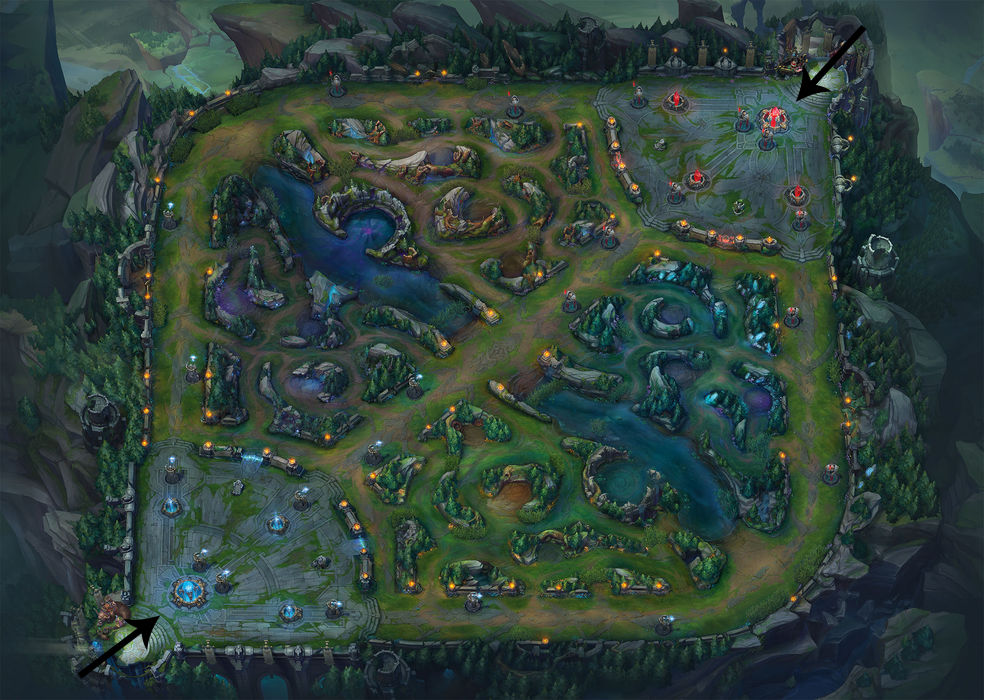
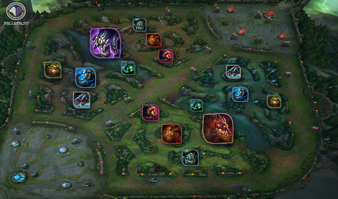
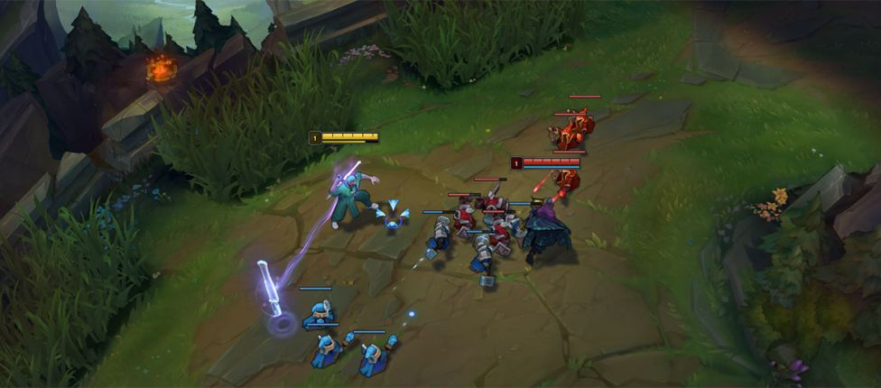
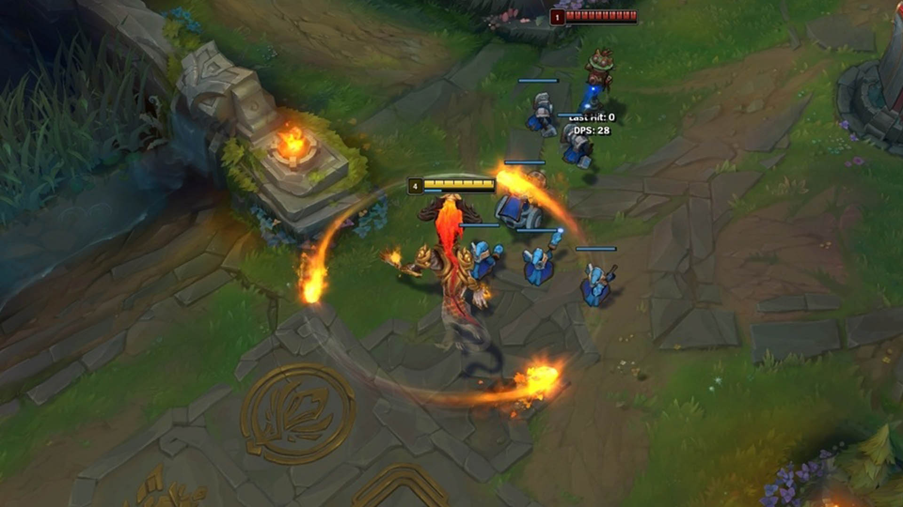
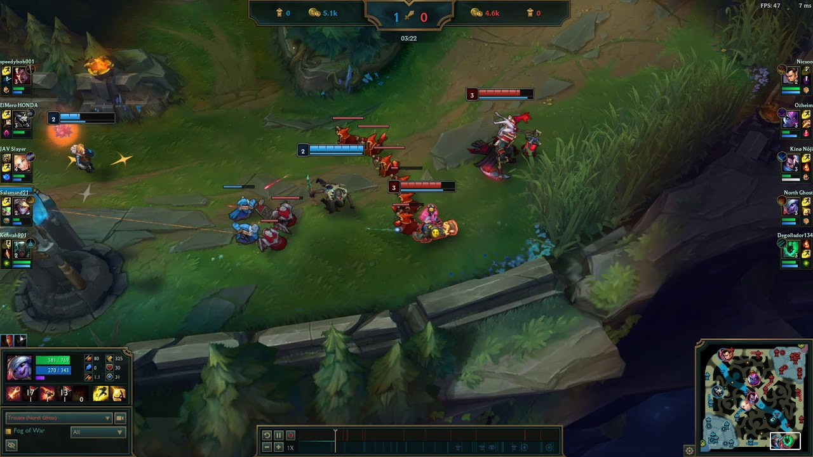
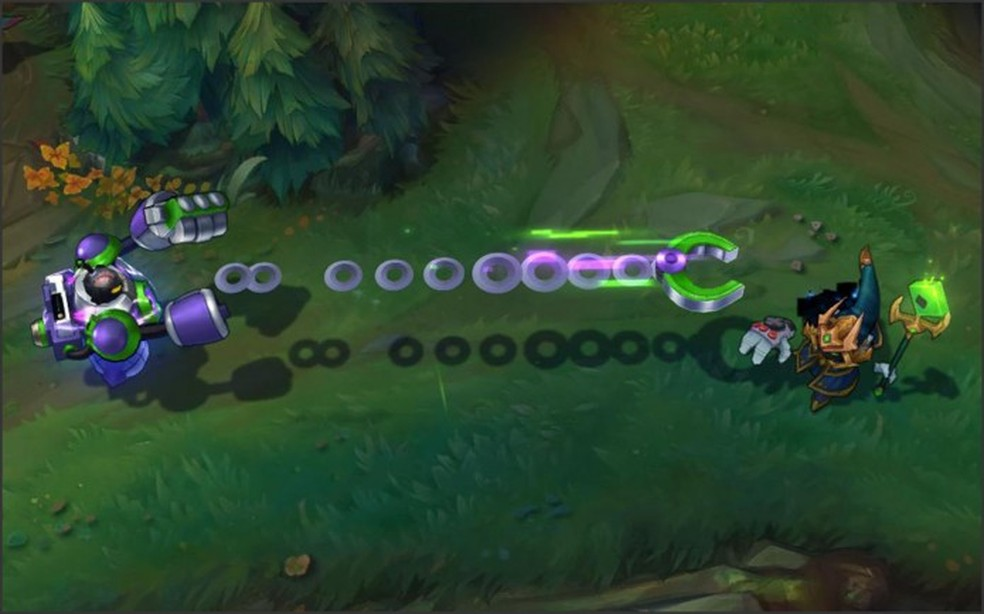
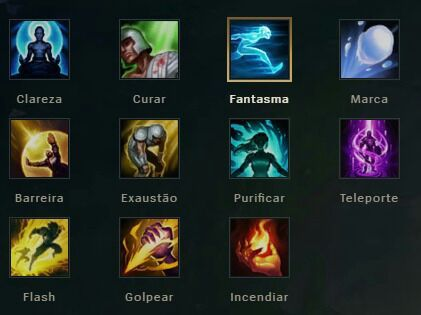
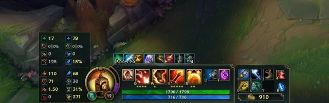

O que é league of legends?
League of Legends é um jogo que envolve muita estratégia e trabalho em equipe. Você e mais 4 jogadores irão formar uma equipe em que seu objetivo é destruir o NEXUS inimigo. Selecione seu campeão dentre mais de 140 campeões e batalhe
em Sumoners Rift.
Aprenda o Básico
Objetivos e Posições
Objetivos
O seu objetivo é derrotar é derrotar o nexus inimigo (estrutura em destaque no meio das duas bases), mas para chegar lá você irá precisar destruir as torres inimigas.Existem outros objetivos que são os monstros.Eles dão alguns poderes a mais para a sua equipe (é claro que só se a sua equipe matá-lo), o principal desses monstros é o Baron (ou barão em portugues). Estes monstros são essenciais para a vitória da sua equipe.
Posições
As posições do LoL são as funções dos jogadores dentro do jogo. Cada jogador cupa sua função especifica dentro do jogo. Temos 5 posições: topo, caçador, meio, atirador e suporte. Mas, costumamos usar os nome em ingles: top, jungler, mid, ad carry (ou adc) e support.
Jungler
Considerada a posição mais importante dentro do jogo, ela tem a função de ajudar outras lanes com o gank. Eles transitam entre as areas da jungle (selva) mantando os monstros para ganhar XP e upar as suas habilidade. Ele também carrega um feitiço proprio que é chamado golpear (ou smite), que tem a função de ajuda-lo no farm e tambem a pegar os objetivos/monstros principais (barão e dragões).
Quer saber mais sobre a jungle? Então, clique aqui
Top
São os jogadores responsáveis por proteger a rota do topo, eles atuam sozinhos e enfrentam apenas um adversário. Normalmente são usados campeões tanque ou lutadores, oque torna a luta entre eles mais longa. O principal feitiço usado por jogadores do top é o teleporte. E por utimo só um aviso: nunca em hipotese alguma jogue de Vayne na Top Lane.
E ai, gostou do top e quer saber mais? Então, clique aqui
Mid (Meio)
Eles atuam na rota central, e assim como os top laners ficam sozinhos e se enfretam sozinhos. A principal função deste jogador é servir como fonte de dano para o time. Os principais campeões ultilizados são magos ou assasinos, justamente por seu poder de dano, mas que em contra partida não tem muita vida e não duram muito em TF O principal feitiço usado por eles assim com os top laners é o teleporte
Gostou do mid e quer se tornar um excelente mid laner? Então clique aqui e se liga nas dicas do Tinowns pro player campeão do CBLOL.
Ad Carry (ADC)
Os ad carry's são players que atuam na rota inferior (Bot) junto com o seu suport. O adc assim com o mid tem a função de dar dano e são bem frageis. Os atiradores geralmente utilizam campeões de dano físico (ou híbrido) que atacam à distância. Por isso, eles precisam dominar a arte do kite, isto é, desferir dano aos inimigos enquanto se movimenta. Os players ultilizam normalmente o feitiço de cura.
Quer ser um adc? Então clique aqui e aprenda mais sobre a posição.
Suporte
Atuam na rota inferior juntamente com o adc. Os players desta posição precisam ser inteligentes nas tomadas de decisão, pois precisam proteger os aliados com o peel, dar engage em team figths e também ficam responsaveis por controlar a visão no mapa com wards. Os suportes podem jogar com campeões de diversas classes, sobretudo tanques e magos. O leque de feitiços utilizáveis também é variado: incendiar, exaustão e barreira são os mais comuns.
Achou interessante e quer enfrentar o desafio de ser um suporte? Então, clique aqui
Feitiços e Habilidades
Feitiços
Os feitiços do invocador são utilizados para melhorar a experiencia no jogo, sendo que cada um tem um efeito único. Eles não tem nenhum tipo de custo, e são limitados somente por tempo de recarga. Tempo de recarga que não diminiu ao comprar itens (como as habilidades normais). O principal feitiço ultilizado por todos os campeões independentes da rota é o flash.
Quer saber mais sobre cada feitiço especificamente? Então, clique aqui
Habilidades
Todo campeão tem 5 habilidade sendo 1 a passiva que é ativdada naturalmente, 3 habilidades coadjuvantes que tem menor dano ou menor tempo de recarga, e a ultimate que é a principal habilidade de todo campeão, causando mais dano e com maior tempo de recarga. As 3 habilidades coadjuvantes tem 5 níveis para evoluir, a ultimate tem 3 níveis para evoluir e a passiva não tem nenhum nivel para evoluir
Glossário
TF
TF = Team Figth ou Briga de Times. É um termo ultilizado para fazer referencia a briga 5 vs 5, ou seja a briga entre todos de um time contra todos do outro.
Wardar e Ward
Wardar é posicionar sentinelas ou totem de vigilância em algum ponto do mapa do lol. Ward são itens que garantem visão completa da área escolhida e ajudam a evitar emboscadas do time inimigo.
Peel
Peel é quando um membro da equipe protege um aliado para que ele possa fazer dano. É um meio de proteção importante para aumentar o potencial de causar dano de um dos membros do time.
Gank ou Gankar
Normalmente feito pelo jungler é o ato de ato de atacar um ou mais adversários de surpresa, usando de superioridade numérica para derrotá-los com mais facilidade. A técnica funciona muito bem contra adversários muito avançados ou fora de posição, que se tornam presas fáceis para o Jungle.
CC
Crowd Control ou Controle de Grupo em portugues são habilidades que paralizam o inmigo fazendo com que ele seja impedido de jogar quaisquer habilidades.
Engage
É o ato de atacar um ou mais adversário usando habilidades (normalmente com o CC).
Agora que você já sabe o básico e escolheu sua lane, clique aqui, baixe o lolzinho, escolha seu campeão e se divita ou tilte com esse lindissímo jogo.